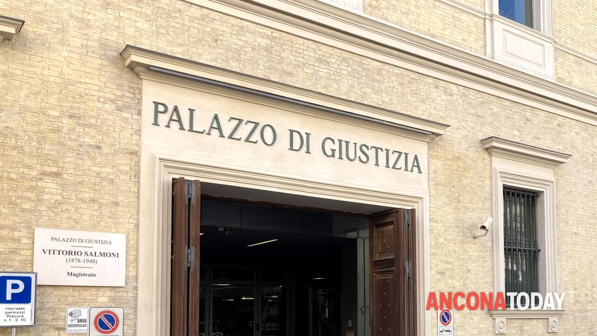

Progetto Camere Penali
Tribunale di Ancona

La frode informatica
Tra i casi discussi durante l'udienza, quello che mi ha colpito di più è stato il terzo, riguardante una frode informatica. L'imputato era accusato di essersi finto un operatore bancario per convincere una persona a trasferire del denaro su una carta intestata a lui.
Ho trovato questo caso particolarmente interessante perché si tratta di un reato molto attuale. Oggi utilizziamo continuamente internet, applicazioni bancarie e servizi digitali, quindi chiunque potrebbe trovarsi di fronte a tentativi di truffa simili.
Questa vicenda mi ha fatto riflettere sull'importanza di prestare attenzione alle comunicazioni ricevute online e di verificare sempre l'identità di chi richiede dati personali o denaro. Anche persone attente possono essere ingannate quando i truffatori riescono a sembrare affidabili.
L'udienza mi ha fatto capire che dietro a notizie che spesso leggiamo velocemente esistono conseguenze reali per le vittime e procedimenti complessi per accertare le responsabilità.